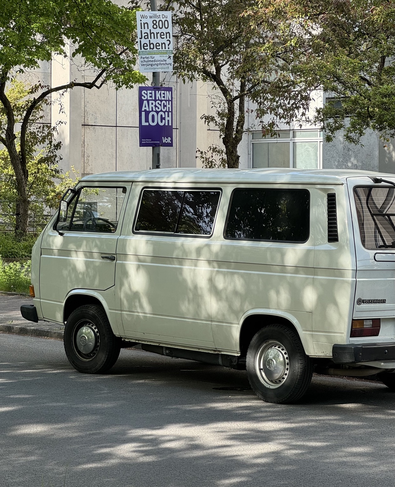

Berlin, 2024
A vintage Volkswagen van parked on a Berlin street beneath trees, with political campaign posters visible behind it.

A vintage Volkswagen van parked on a Berlin street beneath trees, with political campaign posters visible behind it.